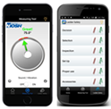

FALLS IN THE WORKPLACE
 ShareCompartir
ShareCompartir
NIOSH Ladder Safety App
The Ladder Safety App, NIOSH’s first mobile application, is designed to improve extension and step ladder safety — a concern for those working in construction or any other task that requires ladder use.
Get the NIOSH Ladder Safety App!
 Download for free at Apple Store and Google Play available in English and Spanish.
Download for free at Apple Store and Google Play available in English and Spanish.
User's Manual is also available:
iOS (En español)
Android (En español)
An award-winning tool
 The Ladder Safety app earned a merit award from the Digital Health Awards, a program that recognizes the world’s best digital health resources for consumers and health professionals.
The Ladder Safety app earned a merit award from the Digital Health Awards, a program that recognizes the world’s best digital health resources for consumers and health professionals.
Are ladder falls an extensive problem?
There is a pressing need to address the serious problem of ladder-related falls and to reduce the resulting injury and death.
- In the United States, more than 500,000 people per year [2013] are treated—and about 300 people die—from ladder-related injuries.
- The estimated annual cost of ladder injuries in the United States is $24 billion, including work loss, medical, legal, liability, and pain and suffering expenses [2013].
- Recent data analysis from three surveillance systems showed that in 2011, work-related ladder fall injuries in the United States resulted in 113 fatalities, an estimated 15,460 nonfatal injuries that involved days away from work, and an estimated 34,000 nonfatal injuries treated in emergency departments.
- Workers who are male, Hispanic, older, self-employed, work in smaller establishments, and work doing construction, maintenance, and repair experience higher ladder fall injury rates.
What are the causes of ladder falls?
Ladder fall injuries are a persistent hazard both in the workplace and at home. There are five major causes for ladder fall incidents:
- Incorrect extension ladder setup angle — In approximately 40% of cases, the leading cause of ladder-related injuries is a ladder sliding out at the base due to an incorrect setup angle. Ladder users tend to set extension ladders at shallower angles than the optimal desired angle (75 degrees).
- Inappropriate ladder selection — Selection of a ladder with the proper duty-rating is also important to avoid structural failure. However, many ladder users lack knowledge of proper ladder selection.
- Insufficient ladder inspection — You can reduce the likelihood of ladder structural failure by practicing regular inspection and maintenance.
- Improper ladder use — Activities such as overreaching, carrying objects, applying excessive force, slips, and missteps are also frequent causes of ladder-related fall injuries.
- Lack of access to ladder safety tools and information — Small companies that account for up to 80% of all construction companies, and individual ladder users, such as homeowners, do not typically receive the required training for safe use of portable ladders. Such ladder users are difficult to reach, often do not have access to safety information, and generally lack the resources to develop or follow an effective ladder safety program.
How does the Ladder Safety App work?
The app provides user-friendly guides and interactive tools to prevent major causes of falls.
Angle Measuring Tool — Uses visual, sound, and vibration signals to make it easier for users to set an extension ladder at the proper angle (approximately 75 degrees) and to check the verticality of extension and step ladders.
Selection Tool — Provides a procedure to select the minimum required ladder duty rating corresponding to user characteristics and task.
Inspection Tool — Includes a comprehensive checklist for ladder mechanical inspection.
Proper Use Tool — Presents a set of rules for safe ladder use in a user-friendly format.
Accessories Tool — Describes a number of available extension ladder safety accessories.
Using smart phone technology, the NIOSH Ladder Safety app delivers ladder safety tools, information, reference materials, and training resources into the hands of individual ladder users wherever and whenever they are needed. The app is available in English and Spanish as a free download for Apple iPhone/iPad and Google Android devices.
What do users think about the Ladder Safety App?
As of August 2016, the app has been downloaded more than 91,000 times. Users have provided high ratings of the app, which has also been promoted by state officials, industry leaders, and safety professionals. Many companies have incorporated the use of the app as part of their safety policy. It has also received considerable international attention.
How is NIOSH improving the Ladder Safety App?
NIOSH researchers consider feedback from ladder users to further improve the app’s appearance, content, and function. As part of this effort, the latest app update includes interactive tools and guides on step ladder safety.
Resources
NIOSH Ladder Safety smart phone app video
Published on February 2, 2016
Occupational Ladder Fall Injuries—United States, 2011
Morbidity and Mortality Weekly Report: April 25, 2014 / 63(16):341-346
The paper analyzes injury data and presents the current state of the occupational ladder fall injuries in the US.
Research to Improve Extension Ladder Angular Positioning
Applied Ergonomics: May 2013 / 44(3):496-502
The paper comparatively evaluates and describes the effective and efficient performance of the innovative multimodal indicator (conceptual design) for setting up ladders.
Factors Affecting Extension Ladder Angular Positioning
Human Factors: June 2012 / 54(3):334 – 345
The paper demonstrates the under-performance of the current standard methods for setting up extension ladders.
Multimodal Indicator Safety Device for Ladder Positioning
US Patent No. 08167087 (Issued May 1, 2012)
The patent describes the invention and technical specifications for the multimodal inclination indicator, i.e., the concept implemented in the Ladder Safety app.
Extension-ladder Safety: Solutions and Knowledge Gaps
International Journal of Industrial Ergonomics: November-December 2008 / 38(11-12):959-965
The paper reviews the literature on causes of ladder fall injury and identifies research gaps, including the need for developing better positioning indicators and easy to use graphic guidelines
In the News
NIOSH Ladder Safety App Evolves with User Feedback
NIOSH Science Blog (February 29, 2016)
NIOSH Ladder Safety App Now Includes Step Ladders
NIOSH eNews (February 2016)
Ladder Safety: There's an App for That
NIOSH Science Blog (August 27, 2013)
NIOSH Update: New NIOSH Smart Phone App Addresses Ladder Safety
NIOSH Update (June 17, 2013)
- Page last reviewed: October 25, 2016
- Page last updated: October 25, 2016
- Content source:
- National Institute for Occupational Safety and Health Division of Safety Research